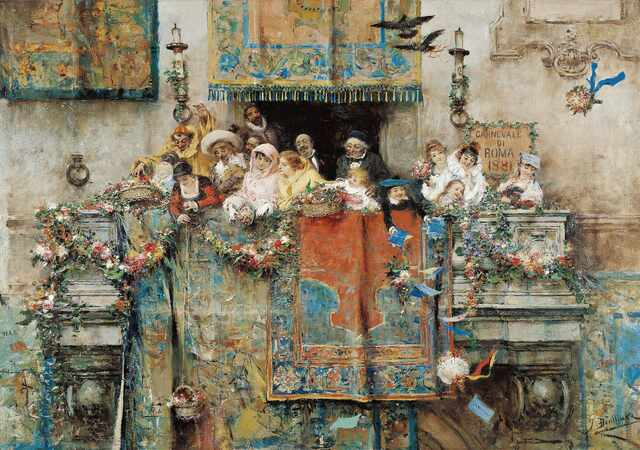

Monisterna

Monisterna är ett politiskt parti som hämtar inspiration från den
filosofiska principen om monism. Istället för att se världen genom
strikta dualiteter – fysiskt kontra mentalt, ekonomi kontra kultur –
är det politiska arbetet ett uttryck av en gemensam, neutral grund. Detta unika perspektiv
leder till en harmonisk syn på samhället där både materiella,
kognitiva och andlinga behov respekteras och integreras.
» Läs mer om Åtta delar för ett
harmoniserande samhälle.
Partiet tror på vetenskapens kraft och teknologins potential, men
också på människans inre värden och kulturella uttryck. Genom att
förena dessa aspekter strävar Monisterna efter att skapa ett samhälle
där teknologisk utveckling går hand i hand med kognitiv och kulturell
tillväxt. Det behövs en balans mellan ekonomisk tillväxt och
miljöhänsyn, mellan individens frihet och gemenskapens väl.
Med en vision om en integrerad och holistisk framtid, utmanar
Monisterna traditionella politiska gränser. Även där det finns
motsättningar söker vi möjligheter och fortsätter arbeta för ett
samhälle där alla människor kan trivas och växa.